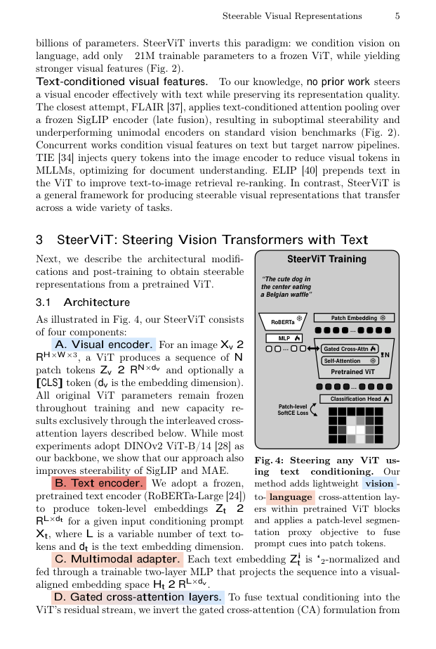

#1
★ 7/10
Steerable Visual Representations
可引导的视觉表征

图 Figure · Page 5 of paper
🎯 用自然语言动态引导视觉Transformer表征聚焦任意概念
Steer pretrained ViT features toward any concept using natural language via early text-visual fusion.
| 维度 | 中文 | English |
|---|---|---|
| ❓ 待解决 的问题 |
DINOv2、MAE等预训练视觉Transformer能提取强大的通用图像特征，但它们天然聚焦于图像中最显眼的区域，无法被引导去关注用户真正感兴趣但不那么突出的概念。多模态大语言模型虽然可以用文字引导，但其表征过于以语言为中心，在纯视觉任务上效果下降。目前缺乏一种既能用自然语言引导、又不损害通用视觉表征质量的方法。 | Pretrained Vision Transformers like DINOv2 and MAE produce powerful general-purpose image features, but they automatically focus on the most visually dominant regions, with no mechanism to redirect attention to less salient but user-relevant concepts. Multimodal LLMs can accept text guidance, but their representations are language-biased and degrade performance on purely visual tasks. There is no existing method that lets users steer generic visual features with natural language without sacrificing their general-purpose quality. |
| 💡 解决 的亮点 |
• 早期融合跨注意力机制：通过轻量级跨注意力模块将文本直接注入冻结ViT编码器的中间层，而非像CLIP那样在编码后融合（晚期融合），让语言在特征层面重塑视觉表征。 • 无需重训主干网络：ViT主干保持冻结，只训练小型跨注意力适配器，参数高效且保留通用视觉能力。 • 引入可引导性评测基准：提出专用基准定量衡量表征被引导至目标概念的能力，填补了评估生态的空白。 | • Early Fusion via Cross-Attention: Text is injected directly into intermediate layers of a frozen ViT encoder using lightweight cross-attention modules, rather than fused after encoding (late fusion like CLIP). This allows language to reshape visual features at the representational level. • Steerability Without Retraining: The base ViT backbone remains frozen; only small cross-attention adapters are trained, making the approach parameter-efficient and preserving the backbone's general-purpose quality. • New Steerability Benchmarks: The authors introduce dedicated benchmarks to quantitatively measure how well representations can be steered toward target concepts, filling a gap in the evaluation ecosystem. |
| 🧪 实验 内容 |
作者在自行提出的可引导性基准以及图像检索、语义分割、异常检测和个性化物体判别等下游任务上进行评估。基线包括DINOv2、MAE、CLIP及多模态大语言模型。实验涵盖域内和域外（零样本）场景以评估泛化能力，评估指标包括检索准确率、分割质量（mIoU）、异常检测分数（AUROC）以及新基准上的可引导性专项指标。 | The authors evaluate on steerability benchmarks they introduce themselves, as well as downstream tasks including image retrieval, semantic segmentation, anomaly detection, and personalized object discrimination. Baselines include DINOv2, MAE, CLIP, and multimodal LLMs. Experiments cover both in-distribution and out-of-distribution (zero-shot) settings to assess generalization. Evaluation metrics include retrieval accuracy, segmentation quality (mIoU), anomaly detection scores (AUROC), and steerability-specific metrics on the new benchmarks. |
| 📊 实验 结果 |
在提出的可引导性基准上，可引导视觉表征显著优于DINOv2和CLIP基线，能更精准地将注意力引导至目标概念。在异常检测任务上，方法媲美甚至超越专用模型。在个性化物体判别零样本场景中超越了先前方法。通用表征质量（检索、分割等）保持与冻结DINOv2骨干网络相当的水平，未出现明显退化。异常检测AUROC分数和可引导性专项指标均有具体数值提升，分割任务mIoU与原始DINOv2持平。 | On the introduced steerability benchmarks, Steerable Visual Representations significantly outperform DINOv2 and CLIP baselines in directing attention to target concepts. On anomaly detection, the method matches or surpasses dedicated specialist models. On personalized object discrimination tasks, it outperforms prior approaches in zero-shot settings. General-purpose representation quality (e.g., retrieval and segmentation) is preserved at levels comparable to the frozen DINOv2 backbone, demonstrating no significant degradation from the steering mechanism. Specific numerical improvements are reported on steerability metrics and AUROC scores for anomaly detection benchmarks, with the method achieving competitive mIoU on segmentation tasks relative to unmodified DINOv2. |
| 🏁 结论 | 本文证明，通过轻量级早期融合跨注意力适配器，预训练ViT的视觉表征可以被自然语言动态引导至用户指定的任意概念，同时不损害通用视觉质量。论文同时引入了框架和评测基准，开创了可控、任务自适应视觉表征的新范式。 | This paper proves that visual representations from pretrained ViTs can be dynamically steered toward arbitrary user-specified concepts via natural language, using lightweight early-fusion cross-attention adapters, without sacrificing general-purpose visual quality. The work introduces both the framework and evaluation benchmarks, establishing a new paradigm for controllable, task-adaptive visual representations. |
| 🔗 论文 链接 |
arXiv: 2604.02327v1 · 📥 PDF | |
⚙️ Method · 方法详解
该方法在冻结的预训练ViT（如DINOv2）的多个中间Transformer块中插入轻量级跨注意力层。用户输入的文本提示经文本编码器编码后，作为键（K）和值（V）注入跨注意力模块，视觉patch token作为查询（Q）。文本在每一层调制视觉特征，使全局（CLS token）和局部（patch token）表征都朝向目标概念偏移。仅训练跨注意力适配器，其余参数冻结，保留通用视觉质量。
The method adds lightweight cross-attention layers at multiple intermediate transformer blocks of a pretrained, frozen ViT (e.g., DINOv2). A text prompt describing the concept of interest is encoded by a text encoder and injected as keys and values into these cross-attention modules, while the visual patch tokens serve as queries. This allows the text to modulate visual features at each layer, steering both global (CLS token) and local (patch token) representations toward the described concept. Only the cross-attention adapters are trained, keeping the rest of the model frozen to preserve general-purpose visual quality.
📐 Key Formulas · 关键公式
\[\text{Attn}(Q, K, V) = \text{softmax}\left(\frac{QK^\top}{\sqrt{d_k}}\right)V, \quad Q = f_{\text{vis}}(x),\ K=V=f_{\text{txt}}(t)\]
💡 跨注意力机制：视觉patch特征作为查询Q，文本编码作为键K和值V，通过注意力权重将文本信息注入视觉表征，实现早期文本-视觉融合。
Cross-attention mechanism where visual patch features act as queries (Q) and text encodings serve as keys (K) and values (V), injecting textual guidance directly into the visual feature space at intermediate layers.
🌟 Why It Matters · 为什么重要
大多数视觉模型是静态的——无论下游用户关注什么，它们对图像的编码方式一成不变，导致需要针对任务进行微调或接受次优特征。可引导表征提供了一种灵活的中间路径：单个预训练模型的特征可以通过文字提示即时重定向，为检索、检测等任务解锁更高效、更具泛化性的流水线。
Most vision models are static — they encode images the same way regardless of what the downstream user cares about, forcing task-specific fine-tuning or accepting suboptimal features. Steerable representations offer a flexible middle ground: a single pretrained model whose features can be redirected on-the-fly with a text prompt, unlocking more efficient and generalizable pipelines for retrieval, detection, and beyond.